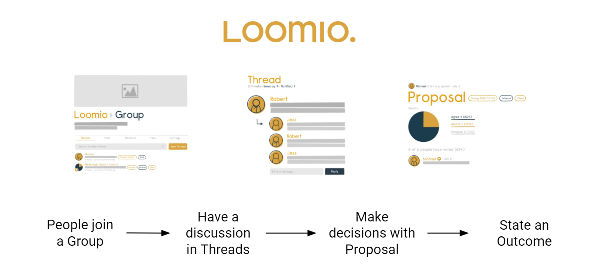
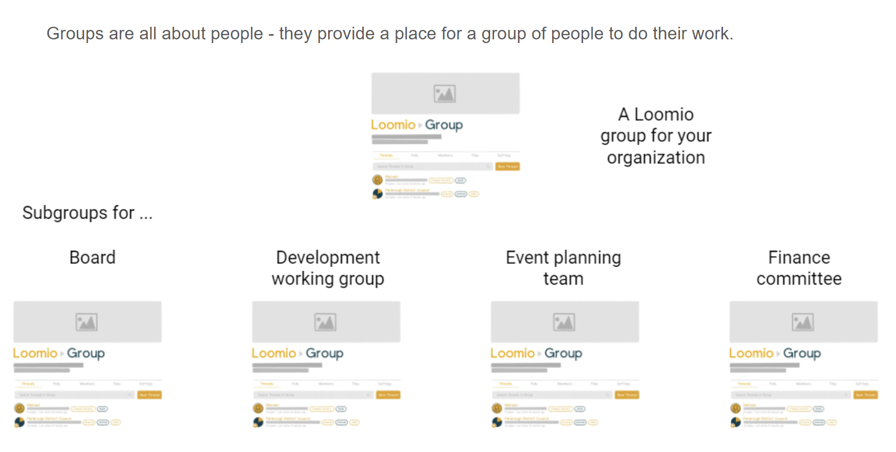

Loomio key concepts
Loomio is a collaborative working space for your organization, focused to help you make decisions to achieve outcomes.
What is Loomio?
Here are some of the key concepts to learn about Loomio.

Group
A Loomio group is a safe place for your organization to meet, have discussions and make decisions about work.

Group page Your Group home page is the first place you see when your arrive. It contains a description of your group; it's purpose, an outline of the work you are going to do, and any other information to help you participate.
Your group will have an image that represents something about your organization.
Subgroups
Subgroups are all about people - they provide a place for a group of people to do their work.

Any natural grouping of people who need to focus on specific work together are a candidate for a subgroup. For example use subgroups as a collaborative space for your working team, project or event, a governance board, a subcommittee or stakeholders group.
Thread
Threads are where you discuss topics, share information and make decisions together.

Threads are used for many purposes. In a board, you will be invited to Threads to prepare for a board meeting, vote on resolutions, approve minutes, discuss a particular topic, ask questions, share reports and discuss any other information important for the board.
Threads keep everything about a topic in one place. Over time you’ll create a useful archive of your organization’s discussions and decisions.
Proposal
One of the key things about Loomio is it's powerful voting tools. These help you take a discussion through to a clear outcome.
A Proposal helps your group progress a discussion towards a decision, where you can have your say by voting.

Simply state what’s being proposed, attach any supporting documents, set a duration for when responses are required by, and invite people to vote.
Loomio is set to automatically remind people who haven't voted 24 hours before the proposal closes. (This can be turned off.)
Proposals help you make clear decisions. They provide a valuable record of the decision, including the discussion that led to the decision.
Other voting tools
There is a range of Poll tools available in Loomio to help you progress a discussion towards an outcome; to ask people to approve something, find a suitable time to meet, or inquire about their preference for options.
- Proposal: Find agreement on a proposal
- Poll: Choose from a list of options to find people's preferences
- Check: Make an offer or ask people to take an action. Think of it as the online equivalent of asking a room of people “Please raise your hand if you…”.
- Time poll: Time polls make it easy to identify the best time to meet. Enter a selection of times and share the poll with the people involved. Participants tick the times they can attend and the result is a table showing who is available when, so you’re able to pick the best time for your group
- Dot vote: Prioritise options together by allocating a ‘budget’ of points. This style of poll is useful for groups trying to allocate a limited resource to a number of options (e.g. agenda items, or budget line-items).
- Score poll: A score poll lets your group express the degree of preference for different options on a scale. People get to express their desire, preference or interest in each option. The poll produces more granular results than a simple majority vote.
- Ranked Choice: Offers a series of options for people to vote in their preferred order. You can choose the number of votes people can give and rank. Ranked-choice is particularly useful when you have a large number of options or an election to run.